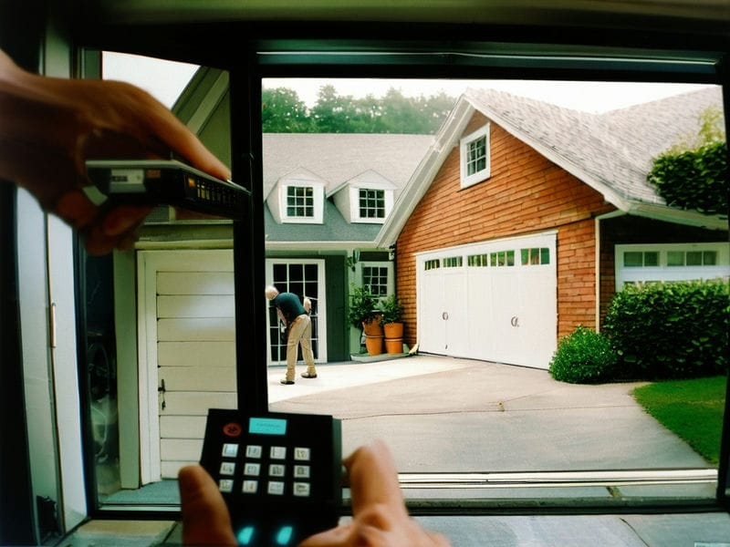
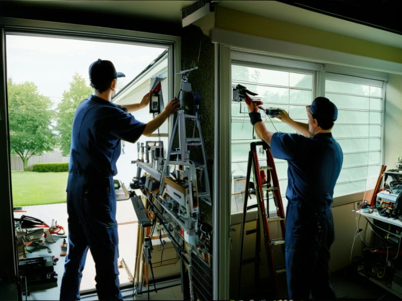

News
Scheduling Regular Garage Door Inspections
Maintenance Tips for Prolonging Garage Door Life
Choosing the Right Home Maintenance Plan for Your Garage
Seasonal Garage Maintenance Checklist
More
Common Garage Door Maintenance Tasks for Homeowners
The Importance of Regular Garage Door Lubrication
How to Clean and Maintain Your Garage Door
Preventative Maintenance for Avoiding Garage Door Repairs
When to Call a Professional for Garage Door Maintenance
Benefits of a Comprehensive Garage Maintenance Plan
About Us
Contact Us
Overhead Door Company of Joliet
Common Garage Door Issues and How to Prevent Them
Jun 02, 2024
Garage doors are an important part of our homes, providing security and convenience for our vehicles and belongings.. However, like any mechanical system, they can experience wear and tear over time.
Comprehensive Garage Door Maintenance Plans for Your Home
Jun 02, 2024
When it comes to maintaining your garage door, safety should always be your top priority.. DIY maintenance tasks can save you time and money, but they can also pose risks if proper precautions are not taken.
Enhancing Home Value with Regular Garage Door Upkeep
Jun 02, 2024
When it comes to increasing the value of your home, regular maintenance is key.. One often overlooked aspect of home upkeep is the garage door.

Essential Garage Door Maintenance Tips for Homeowners
Jun 02, 2024
As a homeowner, it's important to stay on top of regular maintenance for all aspects of your home, including your garage door.. One essential tip that can help you avoid costly repairs and ensure the longevity of your garage door is to schedule regular professional maintenance checks.
By having a professional inspect your garage door on a regular basis, they can catch any issues early before they turn into major problems.
Expert Tips for DIY Garage Door Maintenance
Jun 02, 2024
Performing a safety reversal test on your garage door opener is an important step in ensuring the safety of you and your loved ones.. This test involves checking to see if the garage door will automatically reverse direction when it comes into contact with an object or obstruction.
To perform this test, start by placing a roll of paper towels or a small box in the path of the garage door as it closes.
How Home Maintenance Services Can Improve Garage Door Safety
Jun 02, 2024
Garage door safety is a crucial aspect of home maintenance that should not be overlooked.. While professional services are important for keeping your garage door in top condition, there are also some simple tips you can follow to ensure the safety of your garage door between professional visits.
One key tip for maintaining garage door safety is to regularly inspect the door and its components for any signs of wear or damage.
How Routine Maintenance Can Prevent Garage Door Breakdowns
Jun 02, 2024
Regular maintenance is key to keeping your garage door in top working condition.. Just like with any other mechanical system, your garage door needs professional tune-ups at least once a year to ensure it continues to operate smoothly and efficiently.
Scheduling routine maintenance can help prevent unexpected breakdowns and costly repairs down the line.
How to Keep Your Garage Door Running Smoothly Year-Round
Jun 02, 2024
One of the key factors in keeping your garage door running smoothly year-round is being mindful of any unusual noises or movements.. When you use your garage door on a regular basis, it's important to pay attention to how it operates.
Preventive Maintenance Strategies for Garage Doors
Jun 02, 2024
Preventive maintenance is a crucial aspect of ensuring the longevity and functionality of garage doors.. One important strategy in preventive maintenance is scheduling professional maintenance when needed.
Regularly scheduled professional maintenance allows trained technicians to inspect all components of the garage door system, identify any potential issues, and address them before they escalate into costly repairs or replacements.
Seasonal Garage Door Maintenance Checklist
Jun 02, 2024
As we all know, regular maintenance is key to keeping our homes running smoothly.. And when it comes to our garage doors, seasonal maintenance is crucial for ensuring they continue to function properly.
Signs Your Garage Door Needs Professional Maintenance
Jun 02, 2024
Garage doors are a crucial part of our homes, providing security and convenience.. However, like any mechanical system, they require regular maintenance to keep them running smoothly.
The Benefits of Professional Garage Door Maintenance Services
Jun 02, 2024
Having a well-maintained garage door can greatly enhance the curb appeal and value of your property.. A garage door is often one of the first things people notice when they look at a house, so it's important to keep it in good condition.
Professional garage door maintenance services can help ensure that your garage door is functioning properly and looking its best.
The Connection Between Home Maintenance and Garage Door Efficiency
Jun 02, 2024
When it comes to keeping your home in top shape, don't forget about the importance of maintaining your garage door.. Not only does regular maintenance help to prolong the life of your garage door, but it can also improve its efficiency.
One cost-effective strategy for improving garage door efficiency is to regularly lubricate the moving parts of the door.
The Importance of Regular Garage Door Inspections
Jun 02, 2024
Regular garage door inspections are an essential part of maintaining the safety and functionality of your garage.. By scheduling and conducting these inspections on a regular basis, you can catch any potential issues before they become major problems.
One tip for scheduling regular garage door inspections is to set aside time at least once every few months to thoroughly check all components of the door.
The Role of Home Maintenance in Extending Garage Door Lifespan
Jun 02, 2024
When it comes to home maintenance, taking care of your garage door is often overlooked.. However, ensuring the longevity of your garage door is crucial in order to avoid costly repairs or replacements down the line.
Tips for Lubricating and Maintaining Garage Door Components
Jun 02, 2024
Maintaining and lubricating the components of your garage door is crucial in ensuring its smooth operation and longevity.. One important tip to keep in mind is scheduling routine maintenance with a professional if necessary.
While some maintenance tasks can be done by homeowners themselves, such as regularly cleaning and lubricating the tracks, rollers, hinges, and springs, there are certain aspects that may require the expertise of a professional.
Top Home Maintenance Services for Garage Door Longevity
Jun 02, 2024
When it comes to keeping your garage door in top condition, professional maintenance services are key for optimal performance and longevity.. Your garage door is an important component of your home, providing security and convenience for you and your family.

Why Homeowners Should Invest in Garage Door Maintenance Services
Jun 02, 2024
As a homeowner, there are countless responsibilities that come with maintaining your property.. From mowing the lawn to fixing leaky faucets, the list seems never-ending.